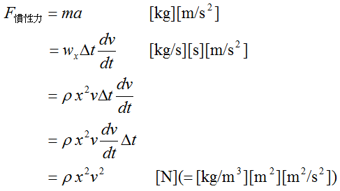
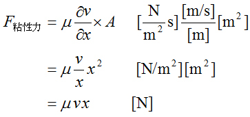
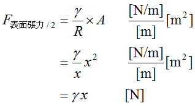
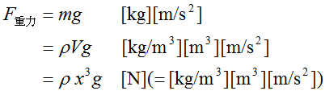

広告
無次元数
無次元数は、ある系に作用する力[N]の釣り合いを示しています。 系の現象は、力の大きさではなく、力の釣り合いで決まります。 例えば、系1と系2の 無次元数が等しい場合、系の大きさや作用する力が異なっても同じ現象が現れます。 これは、（後から出てきますが）計算に用いられる無次元化された支配方程式に現れる定数は 無次元数のみであることに起因しています。
下記に示している各力は物性値や代表速度、代表長さで決まります。 従って、代表速度・長さの取り方によっては無次元数は変わってきます。 計算に無次元化した支配方程式を用いた場合、（無次元数が異なれば）それに伴い計算結果も異なってきます。 しかし、何れの代表速度・長さを用いた場合においても、計算結果を有次元に戻せば、同様の結果が得られます。 つまり、現実の現象は、代表速度・長さの取り方に依存しません。
先ほど、「無次元数が等しければ系1と系2は同様の現象になる。」と書きました。しかし、これらの現象も、 系1と系2において、代表速度・長さの取り方や物性値が異なっていれば、現実においては異なる現象になります。 つまり、「有次元においては現象が異なってくる」と言うことです。
以上を要約すれば、
・無次元数が同じであれば、計算結果は同様になる。
・しかし、代表速度・長さの取り方や物性値が異なっていれば、現実の現象（有次元の現象）は異なったものになる。
と言うことになります。
系に作用する力は次の様になります。




ここで、x[m]は代表長さ、 v[m/s]は代表速度です。
これらの力の釣り合いを示す無次元数を紹介します。 また、ここで述べる無次元数以外にも熱収支式、物質収支式などで 使用される無次元数など様々な種類があります。
| prev | | | up | | | next |